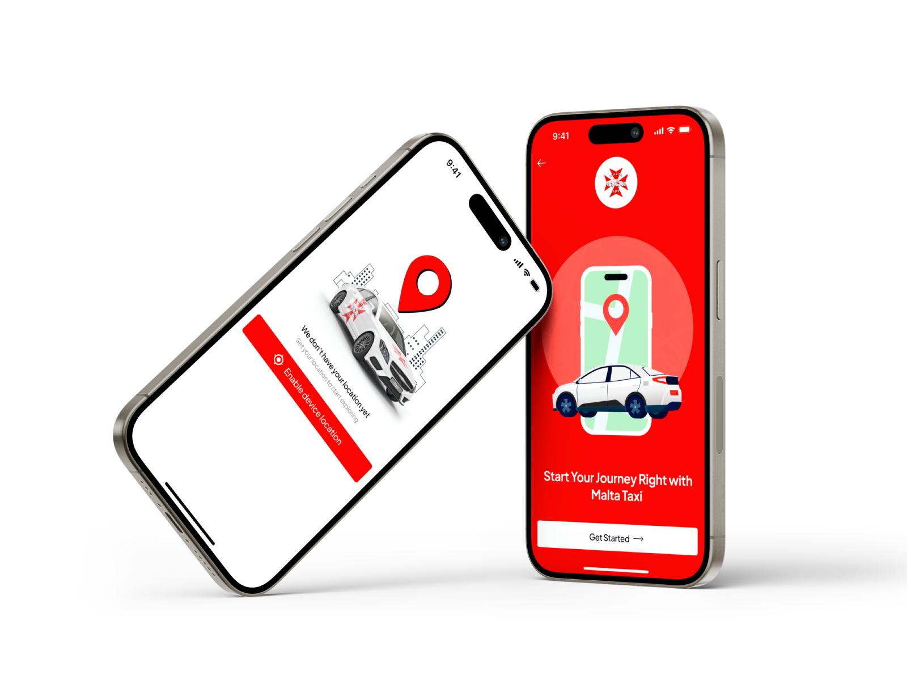
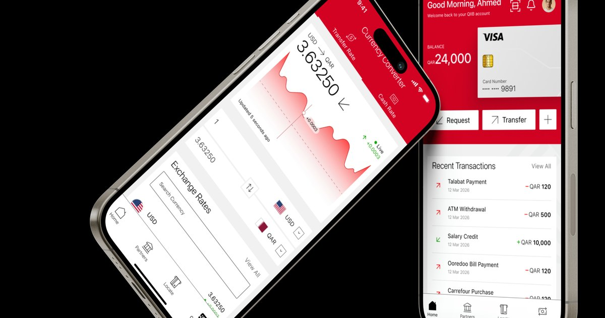

Mobility · Product design
Booking a ride in a place you don’t know.
A taxi app for Malta, where most riders are tourists: the fare before you commit, the car on a live map, and a flow short enough to finish on the kerb.

01 — At a glance
The project in thirty seconds.
- 1Problem
- Tourists couldn’t book a reliable taxi quickly — no clear price and no tracking.
- 2Users
- Riders in Malta, most of them first-time visitors.
- 3Solution
- One booking sequence: location, live map, fare-first booking and tours.
- 4Outcome
- A complete iOS and Android app design, from onboarding to tour exploration.
02 — The problem
What was getting in the way.
No clear pricing, no real-time tracking and a slow booking flow aren’t three separate complaints. Together they make one broken first ride — so the fix had to be one sequence, not three features bolted on.
- 01No clear pricing
- 02No real-time tracking
- 03A slow booking flow
03 — Process
How the work ran.
Five needs from the brief that every screen was held against: quick booking, clear pricing, tracking, easy navigation and guidance.
The journey ordered by when a rider meets each doubt, not listed by feature.
Onboarding, live map, destination search and booking, and tour exploration.
A mobile app design for iOS and Android.
04 — Insights → decisions
What I learned, and what it changed.
Tap a card to see the design decision.
05 — The solution
The key screens.
Onboarding & location
Two screens that make the app useful the moment onboarding ends.
- Onboarding states the promise and offers one action.
- Location is asked for once, with the reason attached — not as a bare system prompt.
- Quick onboardingLocation set up front, so no later screen stops to ask.
- Live mapNearby taxis answer “is one actually coming?”.
- Fare-first bookingSearch and a confirmation that shows the price while cancelling is free.
- Tour explorationPlaces to go for travellers, not just a field to fill.
06 — Outcome
A complete booking app for iOS and Android.
- 01
Onboarding and location setup that makes the first screen useful.
- 02
A live map of nearby taxis, so the wait can be watched.
- 03
Destination search and booking with the fare shown before confirming.
- 04
Tour exploration for travellers.
